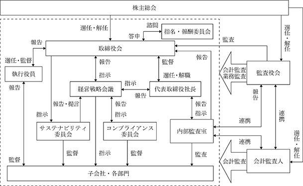

該当事項はありません。
該当事項はありません。
③【その他の新株予約権等の状況】
該当事項はありません。
該当事項はありません。
(注) １ 株式分割（１：４）による増加であります。
２ 有償一般募集（公募による新株式発行）による増加であります。
発行価格 4,122円
発行価額 3,952円
資本組入額 1,976円
2024年１月31日現在
（注） 自己株式1,702株は、「個人その他」に17単元、「単元未満株式の状況」に２株含まれております。
2024年１月31日現在
（注）１ アセットマネジメントOne㈱から2023年８月７日付で公衆の縦覧に供されている大量保有報告書（変更報告書No.４）により、2023年７月31日現在で以下の株式を保有している旨が記載されているものの、当社として2024年１月31日現在における実質所有株式数の確認ができませんので、上記「大株主の状況」では考慮しておりません。なお、その大量保有報告書（変更報告書No.４）の内容は以下のとおりであります。
２ クリフォードチャンス法律事務所外国法共同事業から2023年10月６日付で公衆の縦覧に供されている大量保有報告書（変更報告書No.１）により、2023年９月29日現在で以下の株式を保有している旨が記載されているものの、当社として2024年１月31日現在における実質所有株式数の確認ができませんので、上記「大株主の状況」では考慮しておりません。なお、その大量保有報告書（変更報告書No.１）の内容は以下のとおりであります。
３ 三井住友信託銀行㈱から2023年11月21日付で公衆の縦覧に供されている大量保有報告書（変更報告書No.３）により、2023年11月15日現在で以下の株式を保有している旨が記載されているものの、当社として2024年１月31日現在における実質所有株式数の確認ができませんので、上記「大株主の状況」では考慮しておりません。なお、その大量保有報告書（変更報告書No.３）の内容は以下のとおりであります。
2024年１月31日現在
（注） 「単元未満株式」欄の普通株式には、当社所有の自己株式２株が含まれております。
該当事項はありません。
該当事項はありません。
(注) 当期間における取得自己株式には、2024年４月１日から有価証券報告書提出日までの単元未満株式の買取りによる株式数は含めておりません。
(注) 当期間における保有自己株式には、2024年４月１日から有価証券報告書提出日までの単元未満株式の買取りによる株式数は含めておりません。
当社は、将来にわたる株主価値増大のために内部留保を充実させ、事業の積極展開・体質強化を図るとともに、株主への安定した配当を維持することを利益配分の基本方針としております。
当事業年度の期末配当につきましては、上記方針に基づき、当期の業績及び財務状況等を総合的に勘案した結果、１株当たり30円と決定いたしました。内部留保資金につきましては、今後の設備投資の需要等に備えることとしております。
当社は、「取締役会の決議によって、毎年７月31日を基準日として、中間配当を行うことができる。」旨を定款に定めておりますが、一事業年度の配当回数につきましては、期末配当の年１回を基本方針としており、実施にあたっては収益状況等を勘案して、その都度決定する方針であります。
なお、当社における剰余金の配当の決定機関は、期末配当については株主総会、中間配当については取締役会であります。
(注) 基準日が当事業年度に属する剰余金の配当は、以下のとおりであります。
当社は、研究開発型企業として最先端産業向けの化学薬品の開発、製品応用技術の開発、機能性の探求に経営資源を集中することにより企業価値の増大・最大化を行い、株主等多様なステークホルダーに貢献することがコーポレート・ガバナンスの基本目標であるとの認識の下で、経営執行の透明性の確保と内部統制体制の強化、コンプライアンスに始まる危機管理の徹底を行うこと等により、公正かつ効率的な経営を迅速に行ってまいります。
当社は、取締役会と監査役制度を採用しており、それぞれ取締役会及び監査役会において重要な業務執行の決議、監督並びに監査をしております。これは、会社法に基づき権限の強化が図られている監査役による監査の充実を図るとともに、独立性を有する社外取締役の選任により、経営意思決定・経営監督の各機能の強化と責任の明確化を図ることによって経営を強化していくことがコーポレート・ガバナンスの充実に最も有効であると判断しているためであります。
また、当社は、2022年４月に執行役員制度を導入し、効率的に業務を執行できる体制とする一方、取締役会における議論の充実と、迅速な意思決定を可能としております。
取締役会は提出日現在、代表取締役社長執行役員 太附聖を議長として社外取締役３名を含む取締役７名で構成されており、原則として月１回の定時取締役会を開催することとしており、また、必要に応じて臨時の取締役会を開催し、経営の基本方針、法令で定められた事項及びその他経営に関する重要事項を決定しております。なお、取締役会には、経営執行の公正性・透明性を図るために、常勤監査役１名及び社外監査役２名が出席し、取締役の職務遂行を監視しております。なお、取締役会の構成員の氏名は、「４ コーポレートガバナンスの状況等 （２）役員の状況 ①役員一覧」(以下、「役員一覧」)に記載のとおりであります。
また、取締役・執行役員の指名及び報酬等に係る事項については、社外取締役を議長とする指名・報酬委員会において議論を行い、その結果を取締役会で決定しております。
指名・報酬委員会の構成員は以下のとおりです。
代表取締役会長 竹中 潤平
代表取締役社長執行役員 太附 聖
社外取締役（議長） 橋本 利久
社外取締役 飯田 仁
社外取締役 加藤 京子
執行役員は、代表取締役社長執行役員 太附聖、取締役執行役員 大杉宏信、鈴木欣秀を含め６名となっており、取締役会に対し業務の執行状況及び取締役会より委任された事項等の進捗等を報告するとともに、業務執行に係る戦略立案を行っております。なお、執行役員の氏名は、役員一覧に記載のとおりであります。
経営戦略会議は、取締役会の決定事項等を執行するために代表取締役社長執行役員 太附聖を議長として取締役・監査役・執行役員及び各部門の部長以上の職責の従業員25名で構成され、原則として月１回開催することとしており、業務執行の周知徹底を図っております。
監査役会は提出日現在、常勤監査役 高松基晴を議長として社外監査役２名を含む監査役３名で構成されており、取締役会その他重要な会議に参加するほか、原則として月１回の定例監査役会を開催しており、監査役相互の情報共有、効率的な監査実行体制の構築に努めております。なお、監査役会の構成員の氏名は役員一覧に記載のとおりであります。
当社は、内部統制システムを整備することにより、コンプライアンス遵守・リスクマネジメントの強化等に取り組むとともに、監査役による監査の実効性の確保に向けた取り組みを行っております。
企業倫理規程を制定し、コンプライアンス体制に係る規定を役職員が法令・定款及び社会規範を遵守した行動をとるための行動規範とする。また、その徹底を図るため、コンプライアンス担当執行役員をその責任者として総務部においてコンプライアンスの取り組みを横断的に統括することとし、同部を中心に役職員への教育等を行う。
内部監査室は、総務部と連携し、コンプライアンスの状況について監査する。
これらの活動は、定期的に取締役会及び監査役会に報告されるものとする。
さらに、役職員がコンプライアンス上の問題点を発見した場合は速やかに総務部、常勤監査役又は顧問弁護士等に通報（匿名も可）、報告する体制を構築する。会社は通報内容を秘守し、通報者に対して不利益な取り扱いは行わない。
コンプライアンス担当執行役員を全社のリスクに関する統括責任者として任命し、総務部において、コンプライアンス、環境、災害、品質、情報セキュリティ及び輸入管理等に係る当社全体のリスク管理を網羅的、総括的に管理する。新たに生じたリスクについては取締役会において速やかに対応責任者となる取締役又は執行役員を任命する。
内部監査室は、各部門ごとのリスク管理の状況を監査し、その結果を定期的に代表取締役社長及び取締役会、監査役会に報告し、取締役会において必要に応じ執行役員を交えたうえで、改善策を審議・決定する。
具体的には、下記の経営管理システムを用いて、取締役及び執行役員の職務遂行の効率化を図る。
・定例の取締役会を毎月１回開催し、重要事項の決定並びに執行役員の職務執行の監督等を行う。また、執
行役員は取締役会に対し、月次の業務の執行状況及び取締役会より委任された事項等の進捗等を報告する
とともに、単年及び中期の計画遂行のための戦略立案を行う。
・月例の取締役及び執行役員並びに部門長をメンバーとした経営戦略会議において年１回将来の事業環境を
踏まえた中期経営計画、年度予算を策定し、全社的な目標を設定し、取締役会の承認を得るものとする。
各拠点、部門においては、その目標達成に向けた具体策を立案、実行する。
・当社の基幹システムを活用し、月次、四半期業績管理を実施する。
当社及び子会社と関連会社からなる企業集団の業務の適正性を確保するため、また、グループ間取引の適正を図るため、関係会社管理規程に基づき、財務・経理担当執行役員は関係会社に対する業務の全般を管理し、適切な監視体制及び報告体制を確保する。
子会社については、定期的な業務執行状況の報告を求め、子会社の経営方針、計画について確認と調整を行う。また、当社の企業倫理規程を子会社にも指針として活用するとともに、定期的に当社からの内部監査を実施する。
なお、関連会社の経営については、その自主性を尊重しつつ、事業内容の定期的な報告と重要案件についての事前協議を行う。
現在監査役の職務を補助する使用人はいないが、必要に応じて、監査役の業務補助のためのスタッフを任命できるものとする。
また、監査役は内部監査室長及びその所属員に監査業務に必要な事項を命令することができるものとし、命令を受けた者は、その命令に対して、取締役及び執行役員並びに内部監査室長の指揮命令を受けないものとする。
役職員は、監査役会に対して、法定の事項に加えて当社に重要な影響を及ぼす事項、内部監査の実施状況、コンプライアンス委員会・総務部への通報状況及びその内容を速やかに報告する体制を整備する。
また、会社は監査役及び監査役会に報告をした者に対して、当該報告をしたことを理由として、いかなる不利益な取り扱いもしてはならない。
h.監査役の職務の執行について生ずる費用等の処理に関する体制
監査役の職務の執行について生ずる費用等の請求の手続きを定め、監査役から前払い又は償還等の請求があった場合には、当該請求に係る費用が監査役の職務の執行に必要でないと明らかに認められる場合を除き、所定の手続きに従い、これに応じるものとする。
監査役会と代表取締役社長との間で定期的な意見交換会を実施する。また、監査役会に対して、必要に応じて弁護士、会計士等の専門家を雇用し、監査業務に助言を受ける機会を保証する。
なお、監査役は当社の会計監査人から会計監査に関する内容について説明を受けるとともに、情報交換等の連携を図る。
当社では総合的なリスク管理については、経営戦略会議において討議しており、事業上の予見可能なリスクの防止に努めております。また、重要な事項につきましては、取締役会で対応の検討及び対策の決定をしております。
「経営の健全性の維持」の観点から、コンプライアンスの徹底を図るため、コンプライアンス委員会を組織しております。委員会は現在各部門の課長以上で構成されております。なお、当委員会は、顧問弁護士に法的な側面からアドバイスを受ける体制を採っております。
④ 取締役と監査役の責任免除の内容
当社は、会社法第426条第１項の規定に基づき、取締役会の決議をもって、取締役（取締役であった者を含む）及び監査役(監査役であった者を含む)の同法第423条第１項の損害賠償責任を、法令の限度において、免除することができる旨を定款に定めております。
当社と社外取締役及び社外監査役は、会社法第427条第１項の規定に基づき、同法第423条第１項の損害賠償責任を限定する契約を締結しております。当該契約に基づく損害賠償責任の限度額は、法令が定める額としております。
当社は、会社法第430条の３第１項に規定する役員等賠償責任保険契約を保険会社との間で締結し、被保険者が負担することになる賠償責任額、和解金、弁護士費用等を当該保険契約により塡補することとしております。被保険者は、当社の取締役、監査役、執行役員となっており、当該保険の保険料につきましては、全額当社負担としております。なお、当社が被保険者に対して損害賠償責任を追及する場合は保険契約の免責事項としており、職務の執行の適正性が損なわれないように措置を講じております。
当社の取締役は10名以内とする旨、定款に定めております。
イ．当社は、取締役の選任決議について、議決権を行使することができる株主の議決権の３分の１以上を有する株主が出席し、出席した当該株主の議決権の過半数をもって行う旨、定款で定めております。
ロ．当社は、取締役の選任決議について、累積投票によらないものとする旨、定款で定めております。
イ．当社は、機動的な資本政策の遂行を可能とするため、取締役会の決議によって自己株式を取得することができる旨、定款に定めております。
ロ．当社は、株主への剰余金の配当の機会を増加させるため、取締役会の決議によって中間配当ができる旨、定款で定めております。
⑩ 株主総会の特別決議要件
当社は、株主総会の円滑な運営を行うことを目的として、会社法第309条第２項に定める株主総会の特別決議要件について、議決権を行使することができる株主の議決権の３分の１以上を有する株主が出席し、その議決権の３分の２以上をもって行う旨、定款で定めております。
⑪ 取締役会の活動状況
当事業年度において当社は取締役会を毎月開催しており、個々の取締役の出席状況については次のとおりであります。
（注） 大杉宏信氏と橋本利久氏は、2023年４月27日に開催された第45期定時株主総会において就任したため、出席状況は就任後の開催回数における出席状況であります。
取締役会における具体的な内容として、当社取締役会規程の決議事項、報告事項の規定に基づき、株主総会に関する事項、予算・人事組織に関する事項のほか、当社の経営に関する基本方針、決算に関する事項、重要な業務執行に関する事項、法令及び定款に定められた事項、その他の重要事項等を決議し、また、業務執行の状況、監査の状況等につき報告を受けております。
⑫ 指名・報酬委員会の活動状況
当事業年度において当社は指名・報酬委員会を４回開催しており、個々の指名・報酬委員の出席状況について次のとおりであります。
指名・報酬委員会における具体的な内容として、役員人事の選定に関する事項、役員の報酬等に関する事項、その他取締役会が諮問した事項について協議を行っております。
提出日現在における当社のコーポレート・ガバナンスの体制は、次のとおりであります。

男性
(注)１ 取締役橋本利久、飯田仁、加藤京子は、社外取締役であります。
２ 監査役坂倉宏次、鄭永吉は、社外監査役であります。
３ 2024年１月期に係る定時株主総会終結の時から2026年１月期に係る定時株主総会終結の時まで。
４ 2022年１月期に係る定時株主総会終結の時から2026年１月期に係る定時株主総会終結の時まで。
５ 2024年１月期に係る定時株主総会終結の時から2028年１月期に係る定時株主総会終結の時まで。
６ 本書提出日現在の執行役員は６名であり、取締役兼務者を除く執行役員は以下の記載のとおりであります。
執行役員 柴田 雅仁 三化電子材料股份有限公司 董事長
執行役員 宇田川 崇 営業部門（国内・韓国）担当
執行役員 大平 達也 営業部門（台湾・中国）担当
提出日現在、当社の社外取締役は３名、社外監査役は２名であります。
社外取締役橋本利久氏は弁護士として企業法務に精通しており、当社の法務、コンプライアンスに対して助言をいただくとともに、独立した客観的な立場から当社の経営全般に対する適切な監督機能を果たしていただけるものと期待しております。なお、橋本利久氏との人的、取引関係はありません。
社外取締役飯田仁氏は複数の企業において要職を歴任しており、経営者として豊富な経験と幅広い見識を有しており、当社の経営全般に対する適切な監督機能を果たしていただけるものと期待しております。なお、飯田仁氏との人的、取引関係はありません。
社外取締役加藤京子氏は複数の企業において要職を歴任しており、経営者として豊富な経験と幅広い見識を有しており、当社の経営全般に対する適切な監督機能を果たしていただけるものと期待しております。なお、加藤京子氏との人的、取引関係はありません。
社外監査役坂倉宏次氏、鄭永吉氏との人的、取引関係はありません。
また、各社外取締役及び社外監査役は、当社と資本関係のある会社、大株主、主要な取引先の出身者ではありません。なお、当社は株式会社東京証券取引所に対して上記５名を独立役員とする独立役員届出書を提出しております。
当社は、社外役員候補者が、合理的で可能な範囲内で調査した結果、次の各項目のいずれにも該当しないと判断された場合に独立性を有しているものと判断しております。
１．当社及び当社の子会社、関連会社（以下、「当社グループ」）の業務執行者又は過去10年間において当社グ
ループの業務執行者であった者
２．当社の現在の主要株主又はその業務執行者
３．当社グループが総議決権の10％以上の議決権を直接又は間接的に保有している者又はその業務執行者
４．当社グループの主要な取引先又はその業務執行者
５．当社又はその連結子会社の会計監査人である監査法人に所属する者
６．当社グループから役員報酬以外に多額の金銭その他の財産を得ているコンサルタント、弁護士、公認会計士
等の専門的サービスを提供する者（当該財産を得ている者がコンサルティングファーム、法律事務所、会計
事務所等の法人、組合等の団体の場合は、当該団体に所属する者）
７．当社グループから多額の寄付を受けている者（当該多額の寄付を受けている者が法人、組合等の団体である
場合は、当該団体の業務執行者）
８．当社グループの業務執行者を役員に選任している会社の業務執行者
９．上記２から８のいずれかに過去３年間において該当していた者
10．上記１から８までのいずれかに該当する者が重要な者である場合において、その者の配偶者又は二親等以内
の親族
11．その他、一般株主との利益相反が生じるおそれがあり、独立した社外役員として職務を果たせないと合理的
に判断される事情を有している者
③ 社外取締役又は社外監査役による監督又は監査と内部監査、監査役監査及び会計監査との相互連携並びに内部統制部門との関係
社外取締役と社外監査役による監督又は監査と内部監査、監査役監査及び会計監査との相互連携並びに内部監査室との関係については、取締役会、監査役会等において、直接又は間接に適宜報告及び意見交換がなされております。
また、社外監査役は、取締役会に出席するほか、内部監査室からの内部監査報告、常勤監査役からの重要な会議に出席のうえ実施した監査の結果や重要書類の閲覧・調査による監査の結果等に関する報告、会計監査人からの監査報告を受けることにより、取締役の職務執行に関する監査を実施するとともに、必要に応じて、内部監査室、常勤監査役、会計監査人との間で情報交換や意見交換を行っております。併せて社外監査役は、内部監査室から財務報告に係る内部統制の有効性の評価並びに会計監査人からの内部統制監査に関する意見等について適宜報告を受けております。
(3) 【監査の状況】
提出日現在、監査役は３名（うち、社外監査役２名）で構成され、監査に関する重要事項について、各監査役から報告を受け、協議を行い、又は決議することを目的に、定時監査役会を原則として毎月１回開催するほか、必要に応じて臨時監査役会を開催しております。当連結会計年度における各監査役の監査役会への出席状況は下記の表のとおりであります。
なお、当連結会計年度における監査役会での主な検討事項といたしましては、監査方針・計画及び業務分担、会計監査人の評価、会計監査人の監査報酬に関する同意、内部統制システムの整備・運用状況の確認等があります。
各監査役は、監査役会が定めた監査基準（監査役監査基準）に準拠して、監査の方針、職務の分担等に従い、取締役会、経営戦略会議に出席するほか、取締役等からその職務の執行状況について報告を受け、必要に応じて説明を求め、稟議書等の重要な決裁書類等を閲覧するなどして、取締役及び執行役員の職務執行を監査しております。また、会計に関する事項につきましては、会計監査人からその職務の執行状況について報告を受け、必要に応じて説明を求めるなどして、監査の方法及び結果の相当性を確認しております。
常勤監査役はこれらに加え、営業会議等の重要な会議等への出席、重要書類の閲覧等を行うとともに、必要に応じて社外監査役とこれらの情報を共有しております。
代表取締役社長直轄の組織として内部監査室（人員は３名）を配置しており、年間監査計画に従い、業務活動に係る内部監査に加え、財務報告に係る内部統制の有効性の評価を通じて継続的改善のための指摘、提言、助言を行っております。
内部監査の実効性を確保するための取り組みとして、内部監査結果の報告を代表取締役社長へ行うとともに、取締役会及び監査役会へは四半期毎に、常勤監査役へは毎月、直接報告を行う体制を構築・運用しております。また、監査役及び会計監査人との定期的な情報・意見の交換を行うなど、連携して監査の実効性と効率性を高めております。
③ 会計監査の状況
EY新日本有限責任監査法人
ロ．継続監査期間
2002年１月期以降
ハ．業務を執行した公認会計士
市川 亮悟
唯根 欣三
ニ．監査業務に係る補助者の構成
当社の会計監査業務に係る補助者は、公認会計士７名、公認会計士試験合格者等４名、その他８名であります。
ホ．監査法人の選定方針と理由
監査役会で定めた「会計監査人の評価及び選定基準」に基づき、監査法人の品質管理体制・独立性・監査計画に関する事項、及び監査報酬等に留意して選定しております。
また、監査役会は、会計監査人が会社法第340条第１項各号に該当すると認められる場合は、監査役全員の同意に基づき会計監査人を解任いたします。この場合、監査役会が選定した監査役は、解任後最初に招集される株主総会において、会計監査人を解任した旨及びその理由を報告いたします。
ヘ．監査役及び監査役会による監査法人の評価
監査役会で定めた「会計監査人の評価及び選定基準」に基づき、会計監査人の品質管理状況、監査実施状況、監査報酬水準の適切さや監査役会・経営者等とのコミュニケーションが有効か等により評価しております。
以上を踏まえ、監査役会は当連結会計年度の会計監査人の職務執行に問題はないと評価しております。
イ．監査公認会計士等に対する報酬
ハ．その他の重要な監査証明業務に基づく報酬の内容
該当事項はありません。
ニ．監査報酬の決定方針
該当事項はありませんが、監査日数等を勘案した上で決定しております。
ホ．監査役会が会計監査人の報酬等に同意した理由
当社監査役会は、日本監査役協会が公表する「会計監査人との連携に関する実務指針」を踏まえ、過年度の監査計画における監査項目別、階層別監査時間の実績及び報酬額の推移並びに会計監査人の職務遂行状況を確認し、当事業年度の監査計画及び報酬額の妥当性を検討した結果、会計監査人の報酬等について会社法第399条第１項の同意を行っております。
(4) 【役員の報酬等】
当社役員に対する報酬制度は、株主との価値共有や役職員の経営意識を高め、企業価値向上に向け、経営陣の業績責任を明確にできるものであること、持続的成長に向けたインセンティブとして機能するものであること、役割と責務を遂行するに相応しい優秀な人材を確保・維持できる報酬水準であることを基本方針としており、取締役の報酬については、2020年12月15日付の取締役会において設置を決議された社外取締役と代表取締役からなる指名・報酬委員会において審議及び答申を行い、取締役会がこれを承認、決定しております。また、監査役の報酬等は、株主総会で決議された報酬総額の範囲内において、職務内容、業務分担の状況を考慮して、監査役の協議により決定しております。
当社の役員報酬体系は基本報酬と賞与からなっており、社外取締役・監査役の報酬につきましては、客観的かつ独立的な立場から経営に関する監督を行うことができるよう、基本報酬のみとしております。
基本報酬は従業員平均等と比較して設定した取締役報酬としての基準額に、役割・職責に応じた指数を乗じて金銭として支給しており、当事業年度における取締役報酬の制度、算定方式、個人別の報酬内容については、指名・報酬委員会において毎月協議のうえ、各人の業績・職位・職務等に応じて評価を行いながら審議及び答申を行い、2023年４月27日付の取締役会で決定しております。
業績連動報酬に関しては、単年の業績に連動する報酬であり、当社グループの業績、特に「安定した売上成長を図り、規模の拡大を目指しながらも、経営の効率化を推し進めることで確実に利益をあげられる強靭な企業体質の構築に努める」という方針から、重視すべき経営指標としている売上高及び営業利益の業績予想に対する達成度を考慮し、各人の管掌する組織等の業績等も反映しながら、役割・職責に応じた額を金銭として支給することとしております。当事業年度においては、指名・報酬委員会において、期初の業績予想に対する達成度(売上高73.0％、営業利益55.6％)及び対前期成長率(売上高18.5％減、営業利益44.4％減)や、経営環境等を勘案し、職務・職責に応じた賞与の支給可否及び金額について審議及び答申を行い、2024年１月19日付の取締役会で決定しております。
なお、指名・報酬委員会は、当事業年度において役員の報酬の基本方針や水準、業績連動報酬の概要等について審議のうえ、その結果を取締役会に答申しており、取締役会は、当事業年度に係る取締役の報酬等の内容や決定の方法、指名・報酬委員会の答申が公正であることを確認した上でこれらを承認しており、役員報酬等の額及びその算定方法の決定方針に沿うものであると判断しております。
取締役の報酬等の限度額は、2019年４月25日開催の第41回定時株主総会において、使用人分給与を除き年額400,000千円以内と決議されており、取締役の員数は10名以内と定めております。また、監査役の報酬等の限度額は、2002年４月26日開催の第24回定時株主総会において、年額50,000千円以内と決議されており、監査役の員数は５名以内と定めております。
② 提出会社の役員区分ごとの報酬等の総額、報酬等の種類別の総額及び対象となる役員の員数
連結報酬等の総額が１億円以上である者が存在しないため、記載しておりません。
④ 使用人兼務役員の使用人給与
該当事項はありません。
(5) 【株式の保有状況】
当社では、保有目的が純投資目的である投資株式と純投資目的以外である投資株式の区分について、株式の価値の変動又は株式に係る配当によって利益を受けることを目的とする投資株式については、純投資目的である投資株式とし、中長期的な企業価値の維持・向上及び企業間取引の維持・強化や円滑な金融取引関係の維持等を目的として保有する投資株式については、純投資目的以外の目的である投資株式と区分しております。
企業価値の維持・向上及び企業間取引の維持・強化や円滑な金融取引関係の維持など保有意義が認められる場合を除き、保有しないことを基本方針としております。
また、保有銘柄の保有の適否につきましては、毎年取締役会において、保有株式の状況及び取引状況等を踏まえ、保有に伴う便益やリスク等から総合的に勘案して判断しております。
該当事項はありません。
特定投資株式
該当事項はありません。
該当事項はありません。
該当事項はありません。